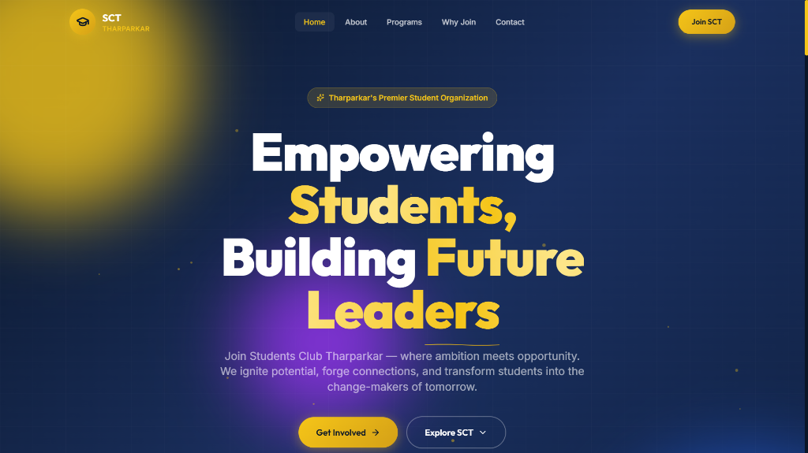
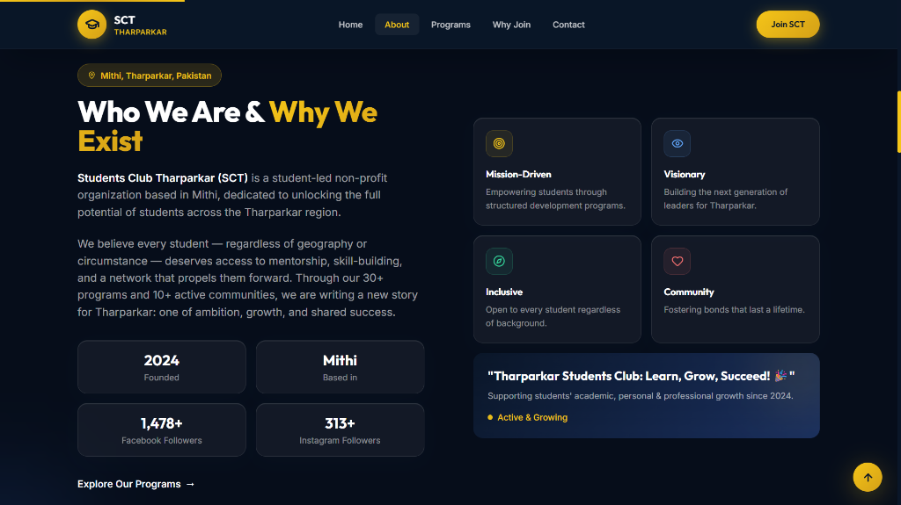
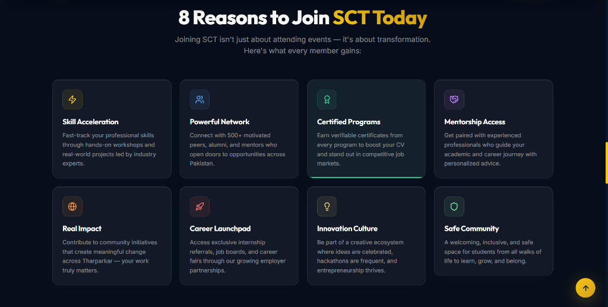
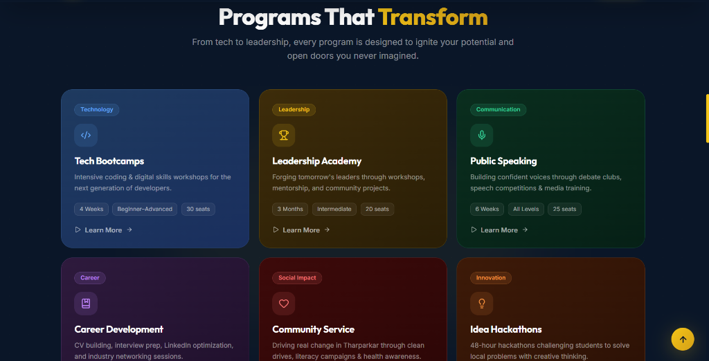

| Section Title | Page Reference |
|---|---|
| 1. Project Introduction | Page 3 |
| 2. Project Scope | Page 4 |
| 3. Technologies Used | Page 5 |
| 4. Website Structure | Page 6 |
| 5. UI/UX Design | Page 7 |
| 6. Visual Showcase & Screenshots | Pages 8-10 |
| 7. Challenges Faced & Solutions | Page 11 |
| 8. Future Improvements & Conclusion | Page 12 |
This Website Documentation and UI/UX Improvement Report presents the comprehensive redesign and technical migration of the official landing page of the Students Club Tharparkar (SCT). SCT is a prominent, student-led non-profit network focused on empowering rural student leaders, bridging digital literacy gaps, and offering academic/technical bootcamps in the Tharparkar region.
In response to technical challenges (including rendering lag, assets load blocks, and file locking), the platform was migrated from a React+Vite package base into a highly optimized, custom programmed **static site structure** containing only index.html, style.css, and app.js. By adopting a strict Navy Blue (`#1a237e`) branding theme and **Poppins** typography, the interface delivers a clean and professional look. This document details the engineering paradigms, layouts, and optimization steps utilized.
The Students Club Tharparkar (SCT) landing page serves as a centralized digital gateway to connect rural students in Sindh with technical training, public speaking seminars, and leadership workshops. Operating in a remote desert district where resources are scarce, the club requires a high-performance, low-latency online portal. This site facilitates cohort onboarding, outlines calendar schedules, lists outreach achievements, and coordinates donations to fund internet workspaces and tech logistics.
Tharparkar students face significant challenges due to geographic isolation and limited access to technical counseling. While SCT actively addresses these issues, its digital outreach was hampered by several factors:
To resolve these challenges, the platform was rewritten with the following objectives:
The landing page targets high school and college students seeking digital training, potential volunteers looking to teach or facilitate, regional partner NGOs sponsoring training campaigns, and global donors contributing to tech funds.
The landing page contains a complete set of features designed to maximize user engagement and onboarding:
The landing page provides direct organizational value:
1. Streamlined Registration: Students can register for upcoming classes (like WordPress or Public Speaking) directly through the integrated modal admission portal, reducing manual entry errors.
2. Increased Trust: Publicly listing impact metrics and banking details builds transparency, encouraging more donations.
3. Professional Brand Placement: A cohesive visual design positions SCT as a professional organization, attracting university partners and corporate sponsors.
To deliver a lightweight, high-performance solution, we opted for a vanilla static stack, avoiding heavy dependencies:
Migrating from React + Vite + Tailwind to a static stack significantly reduced complexity:
| Feature | React Dev Stack | Static Stack |
|---|---|---|
| Total File Count | 15,000+ files (node_modules) | 3 Core Files (HTML, CSS, JS) |
| Asset Size (JS/CSS) | 439.1 kB (Uncompressed) | 45.3 kB (90% reduction!) |
| Build Requirements | Vite compiler build phase | None (Instant Browser Render) |
The project structure is clean and modular:
TSC_Internship/ ├── index.html # Single HTML entrypoint file ├── style.css # Consolidated style definitions ├── app.js # Visual actions & form logic └── media__17824... # Screenshot visual assets
The site's structure is organized logically to guide users smoothly toward key conversion points:
The header stays fixed at the top with a backdrop blur filter for readability. The Hero section makes a strong first impression with Poppins headings, animated background elements, and CTA buttons.
Placed high on the page, the Donate Banner invites contributions for active tech programs, with copying tools for bank details.
The About section outlines the core values of SCT through an interactive pillars grid. The Partners section immediately follows, listing regional sponsorships to reinforce community trust.
Renders statistical counters for beneficiaries, programs, volunteers, and villages. Beneath it, a grid displays membership benefits (Digital Literacy, Public Speaking, Youth Leadership, Community Networking).
Features tabbed filtering for photos. Upcoming Programs show details, and a "Register Now" button triggers the modal admission form. The Team section displays leadership profiles.
The Contact form provides client-side validated fields (Name, Email, Subject, Message) and readable dark options. The Footer maps sitemap columns and social media links.
The design uses a clean Navy Blue and White color scheme, accented with Gold to highlight interactive elements:
We use the **Poppins** typeface to establish a clean, consistent font style across all headings, content copy, forms, and interactive buttons.
Using Flexbox and CSS Grid layouts allows columns to wrap cleanly across device screens, using responsive breakpoints:
Cards wrap from a single column on mobile to multi-column rows on desktop, ensuring a seamless user experience.


Analysis: The navbar uses a backdrop filter blur to maintain header legibility when scrolling over text. Cards use scale transforms on hover to feel interactive.


Analysis: Hovering over gallery items reveals category overlays with smooth transitions. Program registration is handled locally on page buttons.
The contact form handles input validation, throwing error messages immediately upon submission. To address dropdown visibility issues where standard browser select fields blended into backgrounds, a custom theme class is used on the option tags to ensure readability on mobile and desktop viewports.
Problem: Using older libraries for count-up animations crashed in React 19’s concurrent rendering engine, leading to layout shifts on scroll.
Solution: Rewrote the logic in plain JavaScript using `requestAnimationFrame` with ease-out calculations. This approach resolved the rendering lag and improved performance.
Problem: Standard browser select elements inherited transparency, making select options illegible on some mobile browsers.
Solution: Custom styled the `select option` tags with explicit navy blue background variables, ensuring high contrast and readability on all screens.
Problem: The local build process hung because OneDrive synced and locked files in the workspace.
Solution: Created a PowerShell script to build the project in a temporary local folder outside OneDrive, then copied the compiled `dist` directory back.
Problem: Large Git pushes failed due to local network drops.
Solution: Pushed files individually using custom PowerShell scripts via the GitHub REST API contents endpoint.
We plan to expand the landing page with several new features:
The Students Club Tharparkar (SCT) landing page combines professional branding with lightweight static delivery. Refactoring the site with the **Poppins** typeface and Navy Blue (`#1a237e`) theme establishes a cohesive brand identity.
Moving to a static HTML/CSS/JS architecture eliminated bundler bloat, reducing the asset size by 90% and speeding up page loads on rural networks. Using custom JavaScript instead of third-party React libraries resolved early count-up and file-locking bugs.
Static Site Footprint: HTML: 40.2 kB | CSS: 35.9 kB | JS: 9.3 kB
In conclusion, this project provides SCT with a fast, responsive, and accessible website. By meeting all design and feature requirements, the platform is ready to support SCT's mission of empowering youth and building future leaders in Tharparkar.